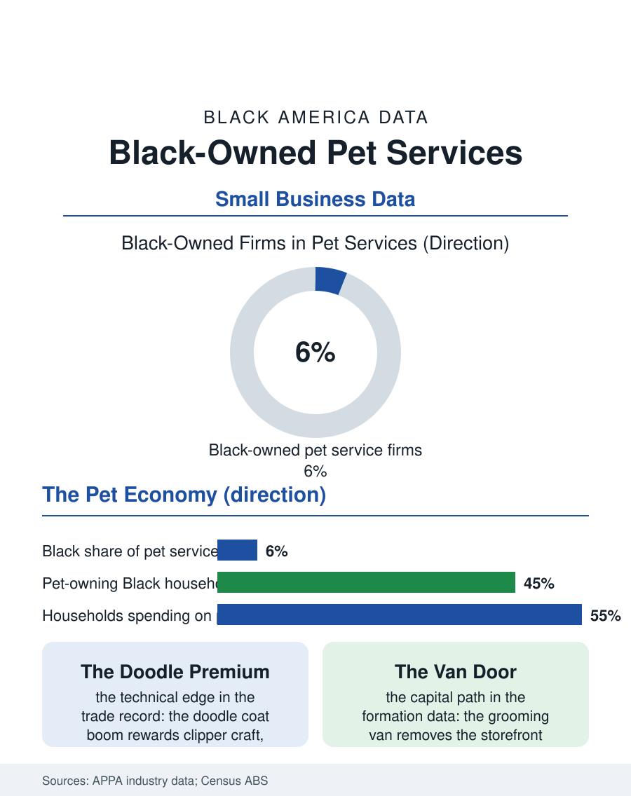

Black Business
Trusted With the Family: Black-Owned Pet Services
The pet economy's service end runs on trust and clipper craft, and Black groomers and kennel owners are building a growing share of it. The pet services file.

The pet economy now runs to more than a hundred fifty billion dollars a year in the industry's own accounting, and its service end, grooming salons and boarding kennels, daycare and sitting, is a small-business economy of storefronts and trust. Black-owned pet service businesses operate throughout it, concentrated in the grooming segment in Black neighborhoods and in the newer daycare and boarding concepts of the suburbs, holding a modest share of the industry's firms. This article reads the pet services file.
The Neighborhood Groomer
Grooming is the segment's foundation trade: low capital entry relative to other retail, a skill learned through apprenticeship and certification courses, and a client relationship of unusual intimacy, since the customer hands over a family member. Black groomers hold a distinctive place in the trade's culture for a technical reason the industry press acknowledges: the coats. Poodle-type and mixed curly coats, the doodle economy that has flooded the grooming market, require skills that the barbering tradition's clipper craft anticipates, and groomers crossing over from Black barbering bring an eye and a hand the doodle boom prices at a premium. The salon economics follow the service pattern of this atlas's business files: chair and table economics, retail attached at the counter, and a booking book that becomes the firm's saleable asset. Boarding and daycare scale differently, real estate first, a facility with kennels, cameras, play yards, and staffing around the clock, which moves the segment's capital requirements toward the commercial end and its ownership toward the franchise systems, whose pet concepts now rank among the fastest-growing in franchising, with the Black franchisee share following the franchise file's general pattern of steady, program-assisted growth.
The Suburban Pet and the Urban Market
Pet ownership itself, counted in the census file of this atlas, sets the market: Black households keep pets at substantial rates, with dogs common and spending per pet rising along the industry's premium curve, yet the service infrastructure has historically been thinnest exactly there, the pet service desert that mirrors the retail geography of Black neighborhoods generally. The market correction is visible in the business formation data: new grooming salons, mobile grooming vans, and daycare facilities opening in Black neighborhoods and in the diverse suburbs where the population files show Black families concentrating, often founded by groomers trained in the chains who carry their client books into ownership. Mobile grooming deserves its line as the segment's Black-friendly innovation: the van eliminates the storefront lease, reaches the aging and anxious pet at home, and commands premium pricing, a capital path of one vehicle that has put a visible cohort of Black groomers into business ownership in the last decade. The industry's labor shortage assists them: certified groomers are scarce enough that salons bid for talent, and the shortage's wage effects show up in the employment data the occupation's small federal footprint allows.
Trust, Cameras, and the Premium Pet
The segment's premium tier sells supervision: live-camera boarding, report cards, spa add-ons, the anthropomorphized service menu that has turned a kennel weekend into a hospitality product at hotel prices. Black-owned facilities compete in this tier in the affluent diverse suburbs, where their market is the general affluent pet economy rather than a racial niche, and their reviews-driven growth follows the platform pattern the business files record, ratings substituting for inherited networks with measurable leveling effects. The file's risks are the service economy's standard set with a living inventory: liability and safety incidents, staffing reliability at kennel hours, and real estate costs for facilities that cannot shrink. The pet services file closes with the industry's demographic horizon. Pet spending per household keeps climbing, the premium customer base keeps diversifying along the suburban map, and the business's core asset, being trusted with a creature the customer loves more than most possessions, is an asset Black service businesses have historically been forced to build better than anyone, since they were so rarely granted it by default. In the one industry that prices trust in its purest form, the groomer's book and the kennel's cameras are accumulating exactly that asset, one well-kept dog at a time.
Certification is the segment's quiet professionalization story. Grooming long ran on apprenticeship alone, but the national associations' certification tiers, safety, coat science, geriatric and special-needs handling, now function as the trade's wage ladder, and certified groomers command the bookings and the pay. Black groomers are visible in the certification pipeline's growth, and the credential does here what it does throughout this atlas's trades files: it makes skill portable across shops and cities, converting a reputation that once traveled only by neighborhood word of mouth into a qualification any employer in the industry can read at a glance.
More in Black Business
Black-Owned Businesses: Counts, Receipts, and the Representation Gap
About 161,000 Black-owned employer firms and three million solo ventures: how the Census Bureau counts Black business ownership, where firms concentrate, and the gap between population share and business share.
Black Median Net Worth: The Wealth Gap in Federal Reserve Data
The Federal Reserve puts Black median family net worth at $44,900, against $285,000 for White families — about 16 cents on the dollar. The widest gap in economic data.
Black Buying Power: The $1.8 Trillion Consumer Economy
Black buying power is estimated at about $1.8 trillion — larger than the economy of most nations. What the figure measures, who produces it, and what it buys.
Source: American Pet Products Association industry expenditure reports; U.S. Census Bureau, Annual Business Survey (NAICS 81291).